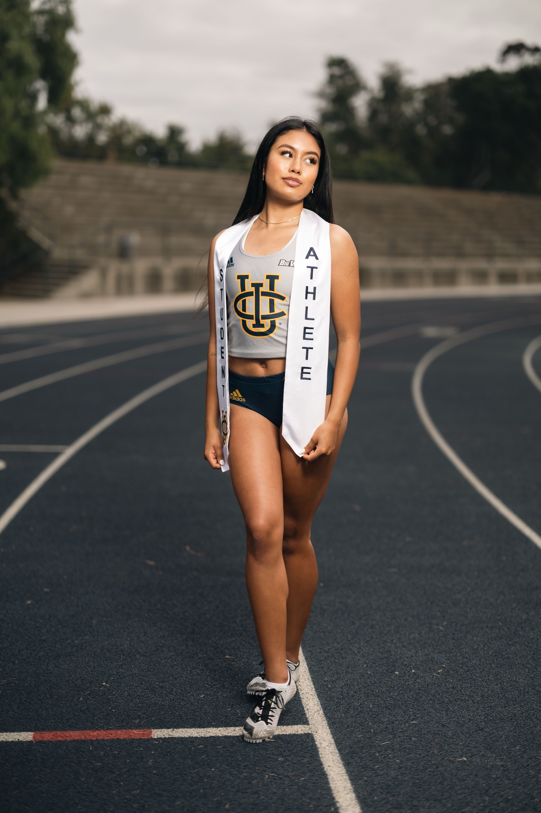
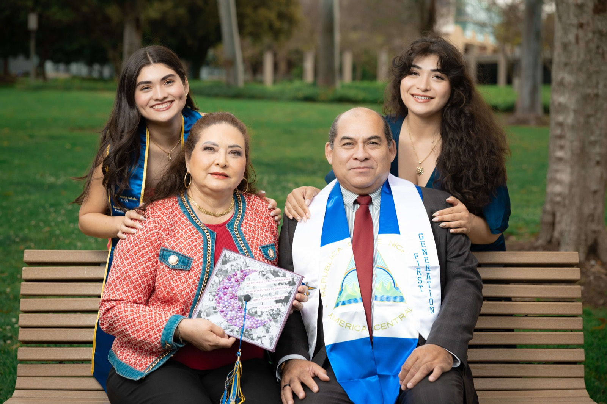
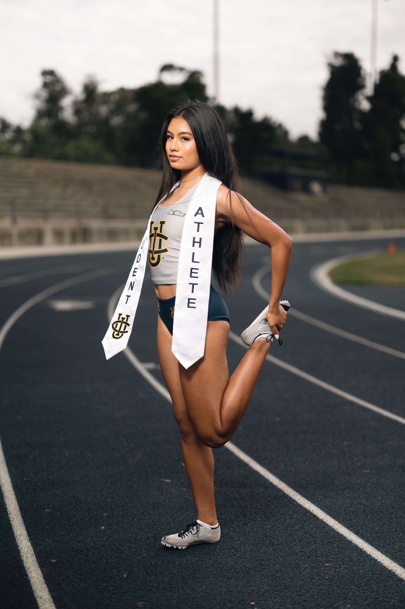
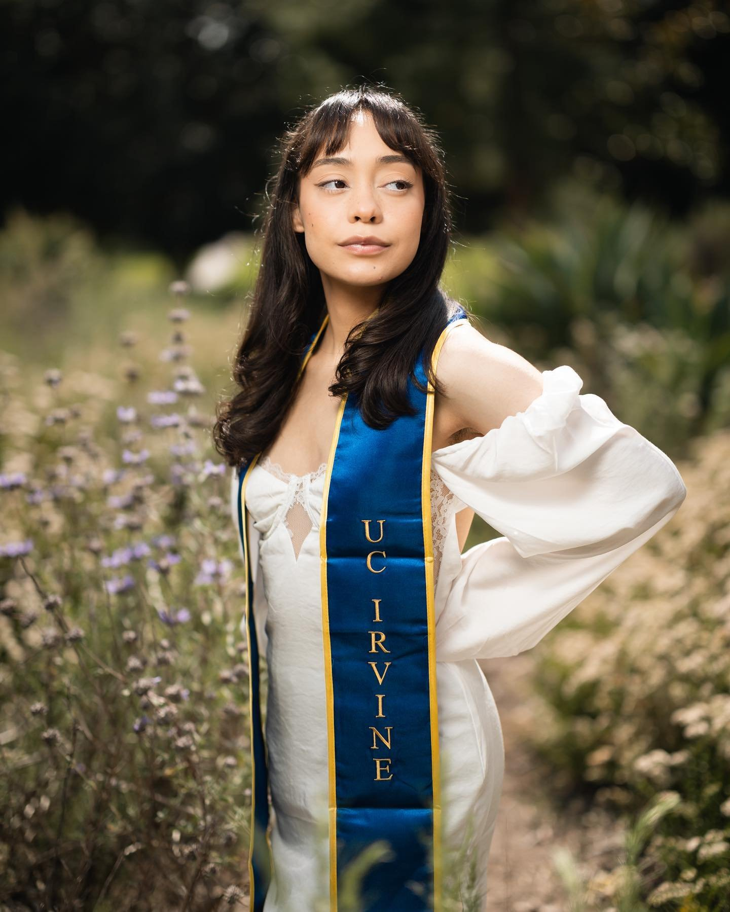

Professional graduation photos at Aldrich Park. Expert lighting, relaxed vibes, 24-hour delivery.
UCI Photo Spot

Aldrich Park is the centerpiece of the UC Irvine campus. This 36-acre circular park sits at the heart of Ring Road, surrounded by every major academic building on campus. Towering eucalyptus trees, Aleppo pines, and lush greenery create a canopy that filters sunlight into soft, flattering rays. For graduation photos, there is no better starting point.
What makes Aldrich Park stand out is the variety within a single location. The winding paths offer natural leading lines that draw the eye to you. The dense tree cover provides shade on bright days, eliminating harsh shadows and squinting. And the park's depth means you can shoot in multiple spots without walking more than a few minutes between setups.
I have shot hundreds of UCI graduation sessions in Aldrich Park, and the location never gets old. Every angle produces a different look. The trick is knowing which paths photograph best at which times. In the early afternoon, the south-facing paths get beautiful backlight filtering through the canopy. By 4pm, the central meadow opens up with soft, even light that flatters every skin tone.
One of my favorite techniques here is using the layered foliage as a natural frame. By positioning you between foreground branches and a blurred background of green, I create depth that makes your portrait pop off the screen. With professional off-camera lighting, the result is a photo that looks like it belongs in a magazine, not a campus snapshot.
If you are doing a multi-location session, I recommend starting in Aldrich Park. The relaxed setting helps you warm up in front of the camera before moving to busier spots like the Peter the Anteater statue or Langson Library. Most of my best-selling UCI portraits come from the first 20 minutes in Aldrich Park, when my clients are relaxed and the light is cooperating.
3pm to 5pm
Moderate
Langson Library, Peter Anteater Statue
Portfolio
Pricing
Per person
Per person
Per person
FAQ
The best time for Aldrich Park graduation photos is between 3pm and 5pm. The afternoon sun filters through the tree canopy, creating soft, dappled light that looks beautiful in portraits without harsh shadows or squinting.
Aldrich Park can get busy on weekends during May and June, but the park is large enough that you can usually find quiet pockets. Weekday sessions are the best way to avoid crowds entirely.
Yes. Aldrich Park has restroom facilities nearby at the Student Center. Most of my clients do at least one outfit change, going from cap and gown to a casual or dressy look.
For small portrait sessions at UCI, a permit is generally not required. I have been shooting at Aldrich Park for nearly 7 years and know the campus policies well.
Ready for stunning graduation photos at Aldrich Park? Book your session and get your raw photos within 24 hours.
Book Your SessionExplore More